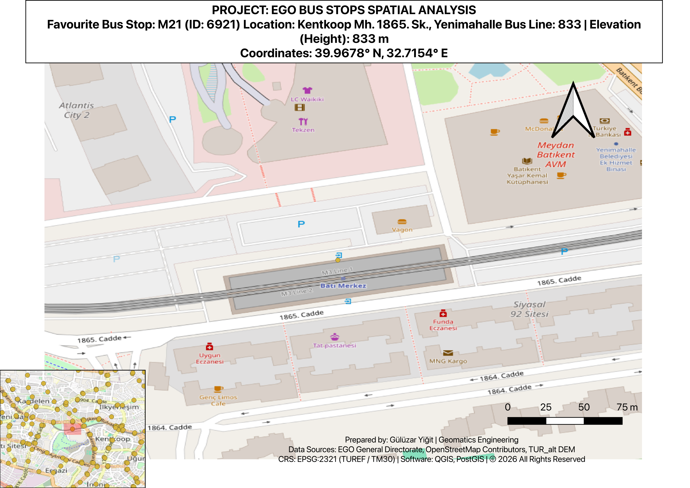
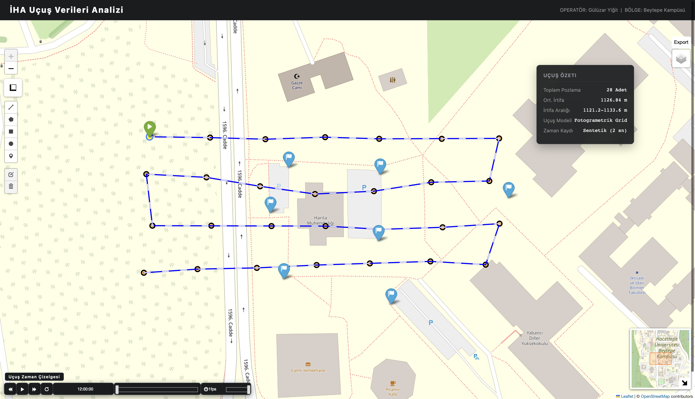
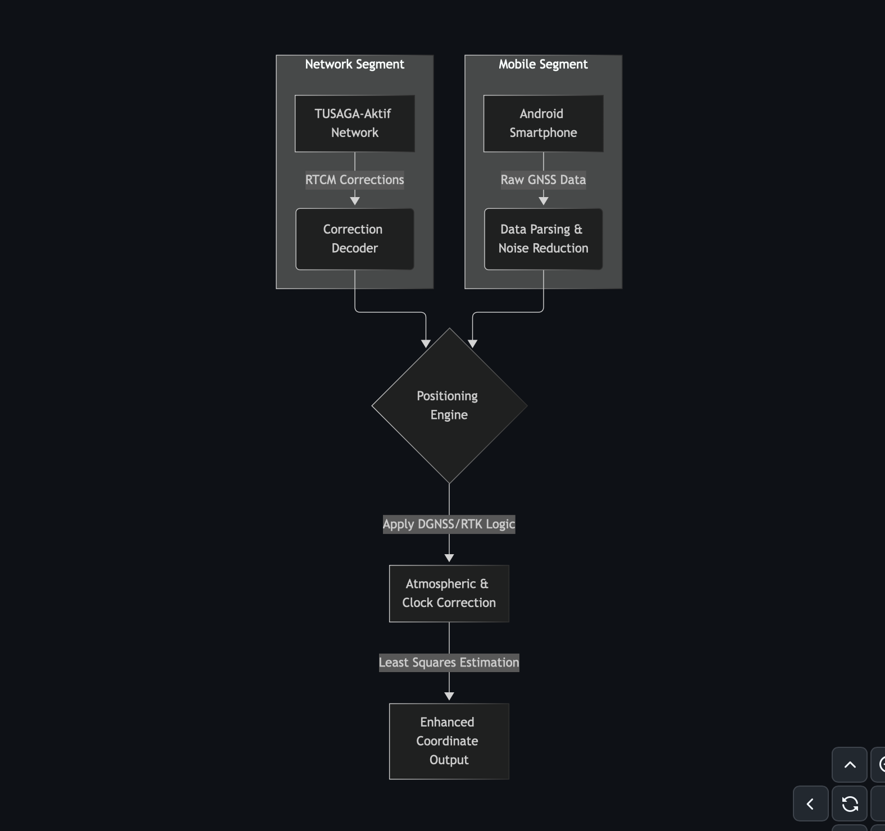
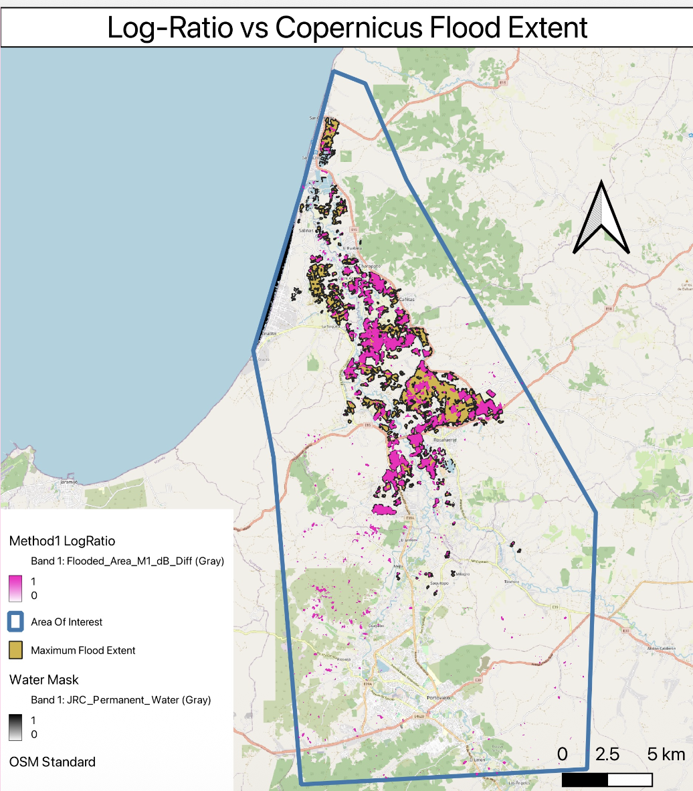
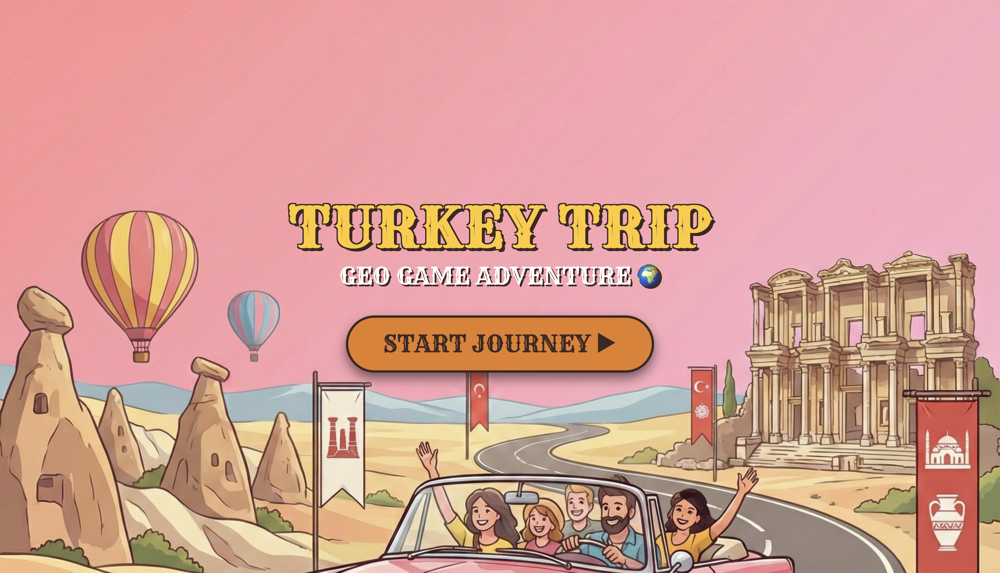

Projects

2025 Wildfire Impact Assessment in İzmir
Conducted a post-fire vegetation analysis for İzmir’s Çeşme, Karaburun, and Urla districts using Sentinel-2 data on Google Earth Engine. Quantified burn severity via ΔNDVI & dNBR classification, integrating QGIS for spatial visualization. Results revealed ~8,933 ha of vegetation loss, with notable clustering around Germiyan and Nohutalan.
Analyzed Intense Fire Areas: Ildır, Germiyan, Nohutalan

EGO Public Transit Spatial Analysis & Network Routing
End-to-end spatial data engineering and network routing across Ankara using OSM road layers, EGO transit stops, and high-resolution DEM grids. Modeled pedestrian accessibility comparing Euclidean proximity vs. Dijkstra-based topological routing. Resolved stop-road matching conflicts via multi-tiered SQL CTEs and dynamic buffer overlays.

UAV Flight Data Analysis & Interactive WebGIS Dashboard
Interactive geospatial decision-support dashboard simulating UAV survey telemetry and photogrammetric missions over Hacettepe Beytepe Campus. Integrates real-time flight trajectory playback, exposure angles (Roll, Pitch, Yaw), calculated photo footprint overlaps, and custom dark-mode mission HUD controls.

Smartphone DGNSS Relative Positioning Tool
R&D project engineering low-cost, high-precision positioning by processing Android raw GNSS observations (pseudoranges and carrier phase) coupled with differential corrections from the TUSAGA-Aktif CORS network. Improved smartphone positioning accuracy by ~75% (Awarded 4th place at Capstone Projects).

Flood Extent Mapping & Change Detection via SAR
Cloud-independent flood delineation leveraging Sentinel-1 Synthetic Aperture Radar (SAR) GRD imagery. Implemented Refined Lee speckle filtering and log-ratio backscatter change detection. Automated surface inundation extraction using Otsu thresholding on GEE, validated against Copernicus Emergency Management data.

Turkey Trip — Web GIS Hometown Game
Interactive gamified Web GIS single-page application testing provincial geography through license plates and folk melodies. Engineered dynamic GeoJSON parsing with D3.js, distance-based scoring on Leaflet.js, and a tense 10-second countdown "Survivor Mode" with custom audio triggers.

Clark-Evans Test Verification via Monte Carlo Simulation
Spatial point pattern analysis modeling Complete Spatial Randomness (CSR) across varying point densities (N=10 to 500). Executed 1,000 Monte Carlo iterations to evaluate nearest-neighbor distance ($d_{min}$), verifying theoretical Clark-Evans variance limits and asymptotic convergence to Gaussian distributions.

Spatial Data Quality Control (QC) & Pipeline Analytics
Relational spatial database architecture focused on automated topology validation, geometry repairs (ST_MakeValid), duplicate entity detection (ST_DWithin), and multi-layer spatial joints. Built reporting pipelines for administrative boundary density and point-of-interest verification.